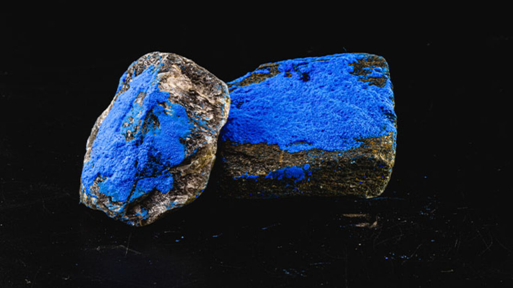
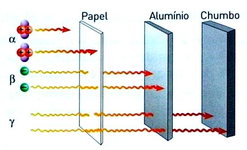
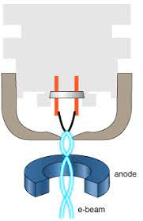
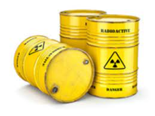

Definição
Radioesterilização é outro método seguro de esterilização do lixo hospitalar já utilizado em países ricos. A radioesterilização utiliza raios gama, originários do Cobalto 60, ou feixes de elétrons em alta energia para destruir as estruturas moleculares (como DNA e RNA) dos microrganismos, fazendo-os morrer ou os impedindo de reproduzir. Tal processo é feito em lugares denominados irradiadores.
O processo também é usado na indústria alimentícia ou em outros casos de desinfecção de algum produto.
Materiais
-
O Cobalto 60, usado para realizar tal processo, é um isótopo artificial radioativo do cobalto. Para ser adquirido, há o processamento do Cobalto 59 (relativamente raro), que sofre bombardeio de nêutrons. Por fim, utiliza-se dele por ser eficiente e fácil de se reabastecer.
 -
Já, os Raios Gama é um tipo de radiação eletromagnética de alta frequência que é produzida por decaimento nuclear (rompimento dos núcleos por causa da instabilidade) de elementos radioativos, além de também serem oriundos de outras situações de alta energia (como erupções solares e relâmpagos). Em razão da enorme energia, os raios possuem um tipo de radiação ionizante com capacidade de penetrar profundamente na matéria. Por isso, a radiação gama causa, facilmente, danos ao núcleo das células, sendo utilizados em pequenas proporções para esse tipo de processo. Abaixo está representado o poder penetrante dos raios gama em relação aos outros tipos de radiação, denominandas raios alfa e beta:
 -
Outrossim, Feixes de Elétrons (também chamados de E-Beam) são uma tecnologia que utiliza o impacto dos elétrons para a transmissão de energia (calor), alterando as ligações químicas do material e, consequentemente, matando os microorganismos. Um feixe de elétrons é produzido em um mecanismo denominado canhão de elétrons, que muitas vezes é implementado em outro mecanismo para formar-se um Tubo de Raios Catódicos (TRC), o qual conduz o feixe para uma tela fluorescente. O canhão consiste num filamento que é aquecido por uma corrente elétrica, fazendo com que o catodo, cujo material libera elétrons facilmente, se aqueça e aumente a vibração de suas partículas. Por conseguinte, os elétrons são liberados e avançam em direção dos anodos pela diferença energética entre as partes do canhão. Assim, gera-se um feixe que é controlado, “mirado”, por uma grade de controle, entre os anodos e a parte anterior.

Vantagens e Desvantagens
-
Vantagens
Primeiramente, há o uso de pouca mão de obra, pois se utiliza muitas tecnologias automatizadas. Ademais, o uso desses tipos de energia garante grande penetração em materiais líquidos, gel ou sólido e, por conseguinte, a morte certa dos microrganismos nesses materiais. Além disso, o aumento de temperatura no processo é desprezível, usa-se pouca energia e, por fim, os produtos podem ser esterilizados na embalagem final.
-
Desvantagens
Alto custo de instalação, por causa do alto nível tecnológico. Esse é o motivo por esse tipo de esterilização ser praticada, geralmente, em países de primeiro mundo. No Brasil, ainda pouco praticada também, porém estudos tentam indicar uma viabilização econômica para o país começar realmente utilizar desse meio.
Outrossim, a exposição a uma radiação forte como é os raios gamas deve ser cuidadosa, necessitando de muitos mecanismos de defesa.
Por fim, após o uso ou pelo vencimento gera resíduos altamente radioativos, perigosos e contaminantes (tudo o que entra em contato com eles é considerado contaminado), que são considerados passivos ambientais (passivos ambientais são obrigações que empresas possuem em prol de evitar danos ambientais) e devem ser armazenadas em depósitos geológicos (cômodos envolvidos de cimento, subterrâneas e seguras), dentro de barris metálicos. Esses resíduos não apresentam nenhum problema comprovado presentemente em seu estado normal, contudo no futuro ou se houver algum acidente, o perigo pode aparecer. No Brasil, o descarte é feito de modo inadequado ainda, porque não há no país a existência de depósitos geológicos.
